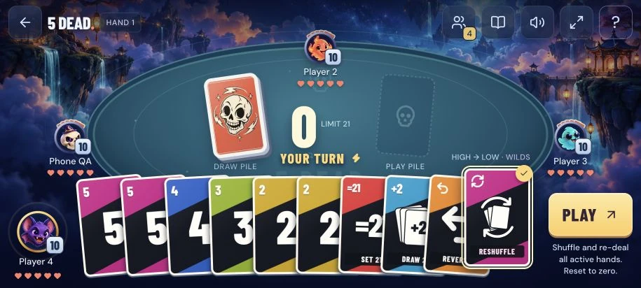

5 DeadProduct story · 5 min read
Keep the table moving. Keep the turn clear.
An independent digital card game with bot play, shared-device turns and online rooms, built around a visible running total and card actions.
Read the case study

Original game capture. The arena, avatars and skull card art are generated assets used by the playable game; labels and controls are part of the actual interface.
View full size ↗01 The problem
What does the next player need to see before choosing a card?
A card table has several things to explain at once: the current total, whose turn it is, what a card will do and who is still in the hand. I wanted the presentation to give each moment a clear focus without making players work through a rules panel on every turn.
Designed for Player joining a short card game. Know the current total, available action and next turn.
User context Design assumption
Learning the digital table and special-card feedback, possibly on a phone.
- The friction
- Crowded hands and effects can hide a simple decision.
- Design implication
- Keep core state stable and use clear commitment feedback.
Example situation · illustrative scenario. Imagine a special card changing the direction of play just as an animation finishes. Everyone needs to know what changed and who acts next.
02 The direction
What shaped the design
The state change matters more than the effect. Total, turn and the selected card need to remain understandable through the animation.
Original project and interface captures · reviewed October 2026
My direction. I gave the running total a stable place and kept card selection, commitment and turn feedback distinct.
Process and product scope
I kept the running total and current discard near the centre, opponents around the table and the local hand close to the player. Selection and a Play action help separate considering a card from committing it.
The three entry modes make different promises. Bot play and local pass-and-play can work offline after the app is ready; online rooms depend on a connection and wait for a disconnected player. Shared-device turns use a privacy screen between hands.
This is an independent game inspired by Hasbro’s 5 Alive. Larger tables use a disclosed house rule. The generated arena and card artwork are assets used in the game itself; I kept the running total, hand and turn feedback distinct from that background.
- 21
- safe running-total limit
- 3 modes
- bots, pass-and-play and online
- 2–24
- extended party-table scope
- Choose a table
Select bots, shared-device play or an online room.
- Read the turn
Check the total, discard and available hand.
- Play and continue
Commit a card and follow its effect into the next turn.
03 Design decisions
The choices behind 5 Dead
Open a decision to see the reasoning and trade-off.
01Keep the running total central
Place the total, discard and turn state where the next decision is made.
Why this matters. A player needs to connect the chosen card to the current state of the hand.
The trade-off. Effects and animations can obscure that relationship if they linger or hide the next turn.
02Separate choosing from playing
Show a selected card and an explicit Play action, alongside the supported drag interaction.
Why this matters. Considering a card should not accidentally commit it, especially on a crowded phone hand.
The trade-off. An extra action can slow experienced play. Both methods need clear feedback and usable touch targets.
03Explain the mode before the table starts
Distinguish bot, pass-and-play and connected rooms, including their waiting and privacy states.
Why this matters. A group should know whether it needs one device, several devices or a network before starting.
The trade-off. Local privacy covers are a social convention; online connection loss can pause the table.
04 The outcome
A table with a clear total and a clear next turn.
I brought the hand, table, turn feedback and joining flow into one playable presentation. Bot and local play work separately from connected rooms. Larger tables follow the documented house rules, with waiting and privacy states suited to each mode.

More about the experience
- Actual game artwork. Generated arena and card art appear in the game itself and are identified as such.
- Disclosed variant. More-than-six-player tables use documented house rules.
05 Reflection
An effect has done its job when the table knows what happens next.
I would test the smallest phone hand and the largest table before adding more effects. The useful questions are whether the next player notices their turn and whether someone can tell what a special card just changed.
What I would evaluate next proposed work
- start a bot hand, play a special card and explain the next action without opening the full rules.
- overlapping cards, shared-device handoff, a disconnected seat and the clarity of the extended-table rule.
Watch privately. Give just enough away.